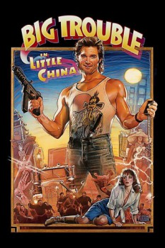

Country:United States, 100 minutes
Spoken languages:Cantonese, English
Genres:Action, Adventure, Comedy, Fantasy
Director(s):John Carpenter
Writer(s):David Z. Weinstein, Gary Goldman
Video Codec:Unknown
Number: 1445

Certification:PG-13
Storyline:
Truck driver Jack Burton gets embroiled in a supernatural battle when his best friend Wang Chi's green-eyed fiancée is kidnapped by henchmen of the sorcerer Lo Pan, who must marry a girl with green eyes in order to return to the human realm.
Cast:
Kurt Russell (as Jack Burton), Kim Cattrall (as Gracie Law), Dennis Dun (as Wang Chi), James Hong (as David Lo Pan), Victor Wong (as Egg Shen)
Medium: Media file,
Location: D:\Big Trouble in Little China\Big.Trouble.in.Little.China.mp4
Loaned: No
Aspect ratio: Unknown